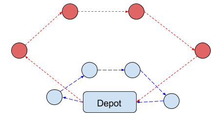
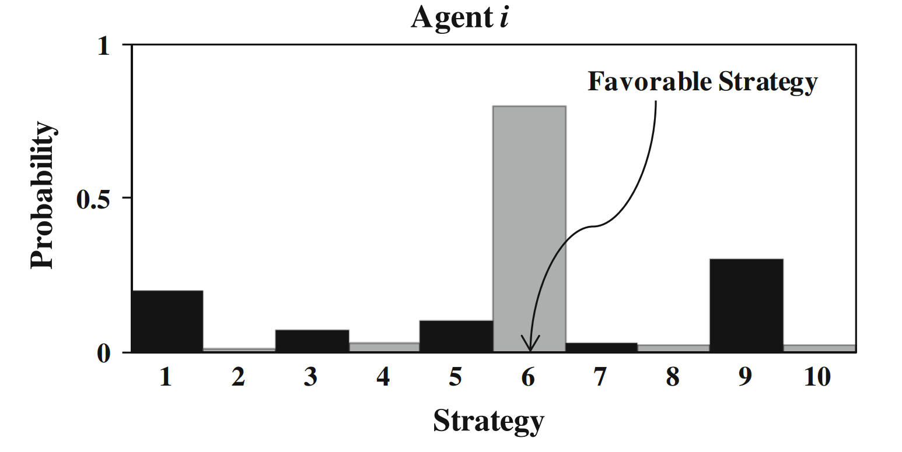

Modern Approaches to The Rich Vehicle Routing Problem
Henry F. R. Fellows
Division of Science and Mathematics
University of Minnesota at Morris
Morris, Minnesota, USA
November 19th, 2016
Computer Science Senior Seminar
What is routing?
“Routing is the process of selecting a path for traffic in a network, or between or across multiple networks.”
The routing of everyday life.
- Uber
- FedEx
- Delta
Travelling Salesman problem
The problem asks for the shortest route which passes through each point once
- In general, the number of possible routes is $\tfrac{1}{2}n!$
- For $n=10$: 1,814,400
- For $n=15$: 653,837,184,000
- That is bad
Traveling Salesman problem
The problem asks for the shortest route
which passes through each point once

Routing is an NP-hard problem
“- at least as hard as the
hardest problems in NP”
- Hard / expensive to find exact solutions quickly
- Probably no easy methods of solving them
- Good solutions to these problems have real value
The Vehicle Routing Problem (VRP)
Given:
- A set of vehicles with a finite capacity
- A set of customers with a finite demand
- A list of distances between each customer
Find the shortest set of routes that satisfy
customer demand
The Rich Vehicle Routing Problem (RVRP)
The RVRP solves more complex routing problems:
- Routing things that have to arrive at specfic times
- Planning routes where you don't know demand
ahead of time - How to choose routes in a competitive environment
Decentralized Vehicle Routing Problem
"How do you route things if every truck
plans its own route?"
- Less useful in real life currently
- More popular as self-driving cars become relevant
Agents
Agents are a loosely defined term. The common features of agents are:
- Emulating an individual of a population
- Limited access to global state
- Decision making authority is given to individuals
Utility
- Local utility: how good the state is for the indivdual
- Gobal utility: how good the state is for everyone
Probability Collectives (PC)
Probability Collectives exploits information theory
to find the best set of strategies
- A strategy is a solution
- Agents share information about their strategies
- The cost function is global
PC setup
- $N$ agents, each with a set $X$ of strategies
- This set is only a sampling of possible strategies
- All strategies have an associated probability
- Probability of being chosen as answer
- Defaults to $\frac{1}{m}$, where $m$ is the length of the set
Probabilities
- Our objective is to get a probabilty near $1.0$
- PC iteratively updates probabilties
Shannon Entropy
- Entropy is an estimate of information content
- As the entropy of probabilities of our sets increase,
we know more about the usefulness of the strategies within.
Contribution
- Compares local utility to global utility
- contribution $=$ Local utility of $i_s$ - Global utility
- Requires estimates of these values
- Combined Strategy set - sample a random strategy from everyone.
- Estimate global utility by guessing future
Update probabilities
- Update based on contribution of agent and entropy
- The contribution becomes more important over time
- If the probabilities changed enough: update probabilities again
- Reduce size of sampling 'neighborhood'
- Reduce influence of entropy in probability
- Otherwise, return the strategy with the highest probability
PC Results
- Mixed results
- Doesn't get caught in mediocre solutions often
- 'Explores' large amount of problem space
- Has potential for improvement
Distributed Reverse Vickrey Auction (drva)
Based off of game theory
- Assumes no global cooperation
- Hidden cost functions
Vickrey Auction
- Sealed bid
- Highest bid wins, but pays second highest bid
- Encourages bidders to bid true value of item
Reverse Vickrey Auction
- Sealed bid
- Lowest bid wins, but is paid second lowest bid
- Encourages bidders to provide accurate cost estimate
Distributed Reverse Vickrey Auction
- Every round the agents submit bids to customers
- Of the customer responses, only the easiest to satisfy is accepted
- Rounds continue until every customer assigned
- Each agent uses another routing algorithm on their list of customers
DRVA Results
- Decently close to best known solutions
- Choice of lower level routing algorithm is important
Conclusions
- DRVA and PC aren't really comparable in performance
- Distributed approaches aren't as good as centralized ones
Questions?
Hfellows.github.io